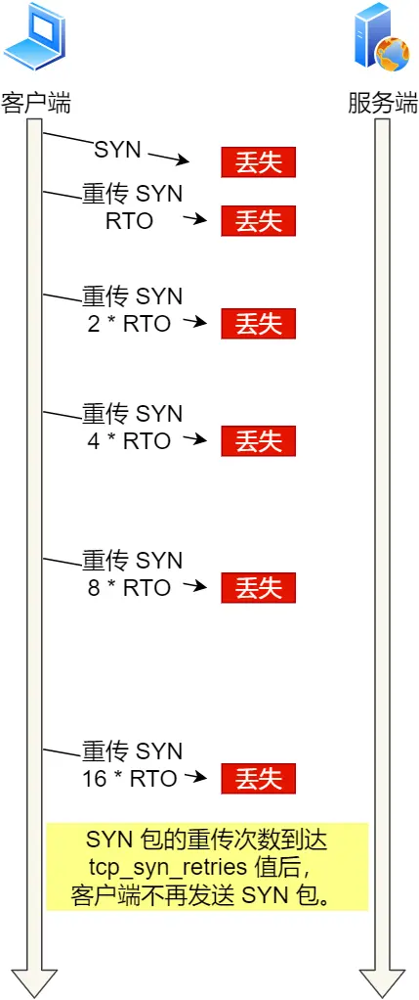
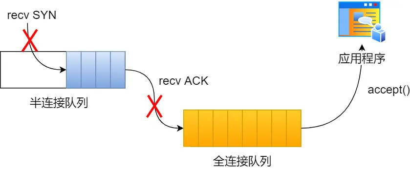

理解和优化TCP连接
一、优化TCP
TCP三次握手性能提升
TCP是面向连接的、可靠的、双向传输的传输层的通信协议，所以在传输数据的时候才能建立连接。
那么，三次握手的过程在一个HTTP请求的平均时间占10%以上，在网络状况不佳、高并发或者遭遇SYN攻击场景中，如果不能有效正确的调节三次握手中的参数，就会对性能产生很多影响。
如何正确有效的正确使用这些参数，来提高TCP三次握手的性能，这就需要理解三次握手的状态变迁，这样当出现问题时，先用netstat命令查看哪个握手阶段出现了问题，再对症下药。
客户端和服务端都可以针对三次握手优化性能，主动发起连接的客户端优化相对简单些，而服务端需要监听端口，属于被动连接放，其间爆出许多中间的状态，优化方法相对比较复杂。
所以，客户端和服务端优化的方式是不同的，针对客户端和服务端优化分别讲讲。
客户端优化
三次握手建立连接的首要目的是同步序列号。
只有同步了序列号才有可靠的传输，TCP有许多特性都依赖序列号实现，比如流量控制、丢包重传等，这也是三次握手称为SYN的原因，SYN的全称是Synchronnize Sequence Numbers同步序列号。
SYN状态的优化
客户端作为主要发起连接方，首先将发送SYN包，于是客户端的连接主要处于SYN_SENT状态。
客户端在等待服务端回复的ACK报文， 正常情况下，服务其在几毫秒内返回SYN+ACK，但如果客户端长时间没有收到SYN+ACK报文，就会重发SYN报文，重发的次数由tcp_syn_retires控制默认位5次。
通常，第一次超时重传是在1秒之后，第二次超时重传是在2秒之后，第三次超时重传是在4秒之后，第四次超时重传是在8秒之后，第五次超市重传是在16秒之后，没错每次超时的时间是上次的2倍。
当第五次超时重传后，会继续等待32秒，如果服务端仍然没有回应ACK，客户端就会终止三次握手。
总耗时 = 1+2+4+8+16+32=63 秒，大约 1 分钟左右。

可以根据网络的稳定性和目标服务器的反满程度修改SYN的重传次数，调整客户端的三次握手时间上线。比如内网中通讯可以试单调低重传的次数，尽快把错误暴漏给应用程序。
结论：调整SYN超时重传的次数。
服务端优化
当服务端收到SYN包后，服务端就会立马回复SYN+ACKbao，表明确认收到了客户端的序列号，同时也把自己的序列号发给对方。
此时，服务端出现了新的连接，状态是SYN_RECV。在这个状态下，Linux内核会建立一个半连接队列来维护未完成的握手信息，当半连接队列溢出后，服务端就无法再建立新的连接。

SYN攻击，攻击就黑在这个半连接队列。
如何查看SYN半连接队列已满，而被丢弃连接的情况？
可以通过netstat -s命令给出的统计结果中，可以得到由于半连接队列已满，引发的失败的次数：
这个查看的是累计值，表示共有多少个TCP连接因为半连接队列溢出而被丢弃。每隔几秒执行几次，如果有上升的趋势，说明当前存在的半连接队列有溢出的现象。
如何调整SYN半连接队列的大小？
要想增大半连接队列，不能单纯的增大tcp_max_syn_backlog的值，还需要增大somaxconn和backlog的值，也就是增大accept队列（全连接队列），否则淡出增大tcp_max_syn_backlog是无效的。
增大tcp_max_syn_backlog和somaxconn的方法就是修改Linux内核参数：
增大backlog的方式是每个Web服务都不同，比如Nginx增大backlog的方法如下：
最后，需要重启Nginx服务，因为SYN半连接的队列和accept队列是在listen()初始化的。

如果SYN半连接队列满了，只能丢弃连接吗 ？
不是这样子的，开启syncookies功能可以不使用SYN半连接队列就可以成功建立连接。
syncookies的工作原理：服务端根据当前状态计算一个值，放在己方发出的SYN+ACK报文中发出，当客户达unsigne返回ACK报文时，取出该值验证，如果合法，就认为连接时建立成功的，如下图所示：

syncookies参数主要有以下三个值：
0值：表示关闭该功能。
1值：表示仅当SYN半连接队列放不下的时候再启用。
2值：表示无条件开启功能。
那么对SYN攻击的时候只需要设置为1即可：
SYN_RECV状态优化
当客户端收到服务单发来的SYN+ACK报文之后，就会回复ACK给服务器，同事客户端连接状态从SYN_SENT转换为ESTABLISHED，表示连接建立成功。
服务端连接成功建立的时间还要在往后，等到服务端收到客户端的ACK之后，服务端的状态才变成ESTABLISHED。
如果服务器段没有收到ACK，就会重发SYN+ACK报文，同时一直处于SYN_RECV状态。
当网络繁忙、不稳定、把稳丢失就会变严重，此时应该调大重试次数，反之则可以调小重发次数。修改重发次数的方法，调整tcp_synnack_retires参数。
tcp_synack_retires默认是5，与客户端重传SYN类似，它的重传经历也是1、2、4、8、16秒之后最后一次重传后继续等待32秒，如果服务端仍然没有收到ACK，才会关闭连接，所以需要63秒。
服务器收到ACK后连接建立成功，此时，内核会把链接从半连接队列中移除，然后创建新的完全连接，并将其添加到accept队列，等待进程调用accept函数时把链接取出来。
如果进程不能及时调用accept函数，就会造成accept队列（全连接队列）溢出，最终导致建立好的TCP连接会被丢弃。


accept队列满了之后，只能丢弃连接吗？
丢弃连接诶只是Linux的默认行为，还可以设置参数来向客户端发送RST复位报文，告诉客户端连接已经建立失败，打开这一功能需要tcp_abort_on_overflow参数设置为。
tcp_abort_on_overflow共有两个值分别是0和1，分别代表：
0：如果accept队列满了，那么server扔掉，client发送过来的ack。
1：如果accept队列满了，server发送一个RST包给client，表示废掉这个握手过程和这个连接。
如果想要知道客户端连接不上服务端，是不是服务端TCP全连接队列满的原因，可以把tcp_abort_on_overflow设置为1，这个时候客户端异常中可以看到很多connection reset by peer的错误，就可以证明由于服务端TCP全连接队列溢出的问题。
通常情况下，应答把tcp_abort_on_overflow设置为0，因为这样有利于面对突发的流量。
举个例子，当accept队列满之后，服务端丢掉ACL，与此同时，客户端的连接状态缺失ESTABLISHED，客户端进程就在建立好的连接上发送请求。只要服务器没有为请求返回ACK，客户端的额请求就会被多次重发，如果服务器上的进程只是短暂的繁忙造成accept队列满，那么当accept有空位的时候，就在此收到请求报文由于含有ACK，仍然会触发服务器段成功建立连接。
所以，tcp_abor_on_overflow设置为0，可以提高建立连接的成功率。
如何调整accept的队列长度？
accept队列的长度取决于somaxconn和backlog之间的最小值，也就是min(somaxconn, backlog)，其中：
somaxconn：是Linux内核参数，默认值是128，可以通过net.core.somaxconn来设置值。
backlog：是listen(int sockfd, int backlog)函数中backlog大小。
Tomcat、Nginx、Apache是比较常见的web服务器的backlog默认值都是511。
如何查看服务吨的进程是accept队列的长度？
使用
ss -ltn命令查看：
Recv-Q：当前accept队列的大小，也就是当前已经完成三次握手并等待服务端的accept()的TCP连接。
Send-Q：accept队列最大长度，上面的输出结果说明监听的是8088端口的TCP服务，accept队列的最大长度为128。
如何查看由于accept连接队列已满，而被丢弃的连接？
当超过了accept连接队列，服务端则会丢掉后续进来的TCP连接，丢掉的TCP连接个数会被统计起来，我们可以使用
netstat -s命令来查看：上面看到41150times，表示accept队列溢出的次数，注意这个累计值，可以隔几秒中执行，如果这数量一直增加，说明accept连接对垒满了。
如果持续不断连接因为accept对垒溢出废弃丢弃，就应该调大backliog以及somaxconn参数。
如何绕过三次握手
上面是只是对三次握手的过程进行优化，如何绕过三次握手的连接。
三次握手建立造成的后果就是，HTTP请求必须由一个RTT（从客户端到服务端一个往返时间）后才能发送。
在Linux3.7内核版本之后，提供了TCP Fast Open功能，这个功能可以减少TCP连接建立的时延。
TCP Fast Open工作方式：
在客户端首次建立过程：
客户端发送SYN报文，该报文包含Fast Open选项，且该选项的Cookie位空，表明客户端请求Fast Open Cookie。
支持TCP Fast Open的服务器生成Cookie，并将其设置为SYN-ACK数据包中的Fast Open选项以返回给客户端。
客户端收到SYN-ACK后，本地缓存Fast Open选项中Cookie。
所以，第一次废弃HTTP GET请求的是偶，还需要正常的三次握手。
之后，如果客户端再次向服务端建立连接的过程：
客户端发送SYN报文，该报文包含数据（对于非TFO的普通TCP握手构成，。SYN报文中不包含数据）以及此前记录的Cookie。
支持TCP Fast Open的服务器会对收到的Cookie进行校验：如果Cookie有效，服务器将会在SYN-ACK报文中对SYN和数据进行确认，服务器随后将数据递送给相应的应用程序，如果Cookie无效，服务器则会丢弃SYN报文中包含的数据，且随后发出的SYN-ACK报文将只确认SYN的对应序列号。
如果服务器接受了SYN报文中的数据，服务器可在握手完成之前发送数据，这样就减少了握手带来的1个RTT的时间消耗。
客户端将发送ACK确认服务器发挥的SYN以及数据，但如果客户端在初始的SYN报文中发送的额时候数据没有被确认，则客户端将重新发送数据。
伺候的TCP的连接的数据传输过程和非TFO的正常情况一致。
开启了TFO功能，cookie的值是存在TCP option字段中的：
注意：客户端在请求并存储了Fast Open Cookie之后，可以不断重复TCP Fast Open直至服务器认为Cookie无效。
Linux怎么打开TCP Fast Open功能呢？
在Linux服务器上，通过设置tcp_fastopen内核参数打开Fast OPen功能：
tcp_fastoptn各个值的含义：
0：关闭。
1：作为客户端使用Fast Open功能。
2：作为服务端使用Fast Open功能。
3：无论作为客户端还是服务端都可以使用Fast OPen功能。
注意：TCP Fast Open功能需要客户端和服务端同时支持，才有效果。
TCP 四次挥手的性能提升
客户端和服务端双方都可以主动断开连接，通常情况下关闭连接的一方称为主动方，后关闭连接的一方称为被方。

可以看到，四次挥手过程只涉及了两种报文，分别是FIN和ACK：
FIN就是结束连接的意思，谁发出的FIN报文，就表示它将会不在发送任何数据，关闭这乙方向上的传输通道。
ACK就是确认的意思，用来通知对方，你放的发送通道已经关闭了。
四次挥手过程：
当主动方关闭连接的时候，会发送FIN报文，此时发送方的TCP连接将会ESTABLISHED变成FIN_WAIT1。
当被动方收到FIN报文后，内核会自动回复ACK报文，连接状态将从ESTABLIESHES变成CLOSE_WAIT，表示被动方在等待进程调用close关闭连接。
当主动方收到这个ACK之后，连接状态有FIN_WAIT1变成FIN_WAIT2，也就是表示主动方发送通道就关闭了。
当被动方进程CLOSE_WAIT1时，被动方还会继续处理数据，等到进程的read函数返回0后，应用程序就会调用close函数，进而触发内核发送FIN报文，此时被动方的连接状态变成了LAST_ACK。
当主动方收到这个FIN报文后，内核会回复ACK报文给被动方，同时主动放到额连接状态会变成TIME_WAIT，在lInux系统大约等待1分钟后，TIME_WAIT状态的连接就会彻底被关闭。
当被动方收到最后的ACK报文后，被动方的连接就会关闭。
可以看到，每个方向都需要一个FIN和一个ACK，因此通常称为四次挥手。
需要注意的是：主动关闭连接的，才会有TIME_WAIT状态。
主动方和被动方关闭优化的思路是不同的。
主动方的优化
关闭连接到方式通常有两种，分别是RST报文关闭和FIN报文关闭。
如果进程收到RST报文，就直接关闭连接了，不需要四次挥手流程。是一个暴力关闭连接的方式。
安全关闭连接idea方式必须通过四次挥手，由进程close和shutdown函数发起FIN报文（shutdown’参数必须传入SHUt_WR或者SHUT_RDWR才会发送FIN）。
调用close函数调用shutdown函数的区别：
调用close函数意味着是完全断开连接 ，完全断开不仅无法传输数据，而且不能发送数据。此时，调用了close函数的一方的连接叫做孤儿连接，如果用
netstat -p命令会发现连接的进程名是空的。使用close函数关闭连接时不优雅的。
shutdown函数可以控制只关闭哪个方向的连接：
参数howto说明，主要有三种方式：
1、SHUT_PD(0)：关闭连接的读这个方向，如果接收缓冲区有已接收的数据，则将会被丢弃，并且后续则会收到新的数据，就会对数据进行ACK，然后悄悄的丢弃，也就是说对端会接收端到ACK，在这种情况相爱根本不知道数据已经被丢弃了。
2、SHUT_WR(1)：关闭连接写这个方向，这就是常称为半关闭的连接。如果发送缓冲区还有未发送的数据，将会被立即发送出去，并发送一个FIN报文给对端。
3、SHUT_RDWR(2)：相当于SHUT_RD和SHUT_WR操作各一次，关闭套接字的读和写两个方向。
close和shutdown函数都可以关闭连接，但是这两种方式关闭的连接，不只在功能有差异，控制他们在Linux参数也不同。
FIN_WAIT1状态的优化
主动方发送FIN报文后，连接就处于FIN_WAIT1状态，正常情况下，如果能及时收到被动方的ACK，则会很卡亏变成FIN_WAIT2状态。
但是当迟迟收不到对方返回的ACK时，连接就会一直处于FIN_WAIT1状态。此时，内核会定时重发FIN报文，其中重发次数有tcp_orhphan_retires参数控制。
注意orphan是孤儿的意思，但是该参数不是只对孤儿连接有效，事实上，对所有FIN_WAIT1状态下的连接都有效，默认值是0。
0表示几次？实际上当时9的时候指的是8次，源码如下：
如果FIN_WAIT1状态连接很多，我们就需要考虑降低tcp_orphan_retires的值，当重传次数超过tcp_orphan_retires时，连接就会直接关闭掉。
对于普遍正常情况时，调低tco_orphan_retires就已经可以了，如果遇到恶意攻击，FIN报文根本无法发送出去，这由TCP两个特性导致的：
首先，TCP必须保证报文是有序发送的，FIN报文也不例外，当发送缓冲区还有数据没有发送的时候，FIN报文也不能提前发送。
其次，TCP由流量功能，当接收方接收窗口为0时，发送方就不能再发送数据。所以，当攻击者下载大文件时，就可以通过接收窗口设置为0，就会使得FIN报文都无法发送出去，那么连接就一直处于FIN_WAIT1状态。
为了解决这种问题的方法就是调整tcp_max_orphans参数，定义了孤儿连接的最大数量：
当进程调用close函数关闭连接，此时连接就会时孤儿连接，因为它无法再发送和接收数据。Linux系统为了防止孤儿连接果冻，导致系统资源长时间被占用，就提供了tcp_max_orphans参数。如果孤儿连接数量大于它，新增的孤儿连接将不再走四次挥手，而是直接fasongRST复位报文被强制关闭。
FIN_WAIT2状态的优化
当主动方收到ACK报文后，会处于FIN_WAIT2状态，就表示主动方发送通道已经关闭，就下来将等待地方发送FIN报文，关闭对方的发送通道。
这时，如果连接用shutdown函数关闭的，连接可以一直处于FIN_WAIT2状态，因为它可能还可以发送或接收数据。但是对于close函数关闭的孤儿连接，由于无法再发送和接收数据，所以这个状态不可以持续太久，而tcp_fin_timeout控制了状态的连接持续时长，默认值是60秒。
它意味着对于孤儿连接（调用close关闭的连接），如果在60每秒内还没有收到FIN报文就会直接被关闭。这个60秒不是随便决定的， 而是与TIME_WAIT状态持续时间是相同的。
TIME_WAIT状态优化
TIME_WAIT状态是主动方四次挥手的最后衣蛾状态，也是常遇见的状态。
当收到被动方发来的FIN报文后，主动方会立刻回复ACK，表示确认对方发送通道已经关闭，接着处于TIME_WAIT状态。在Linux系统，TIME_WAIT状态会持续60秒后才会进入关闭状态。
TIME_WAIT状态的连接，在主动方来确实很快已经关闭了，然后，被动房没有收到ACK报文之前，还是处于LAST_ACK状态。如果这个ACK'报文没有达到这种地方，被动方就会重发FIN把我摁，重发次数仍然由前面介绍的tcp_orphan_retires参数控制。
TIME_WAIT状态尤其重要，主要由两个原因：
防止历史连接中的数据，被后面相同的四元组的连接错误的接收。
保证被动关闭连接的一方，能被正确的关闭。
原因一：防止历史连接中的数据，被后面相同的四元组的连接错误的接收。
TIME_WAIT的一个作用就是防止收到历史数据，从而导致数据错乱的问题。
假设TIME_WAIT没有等待时间或时间过短，被延迟的数据报抵达后会发生什么呢？
服务端关闭连接之前发送的SEQ = 301报文，被网络延迟了。
接着，服务端一相同的四元组重新打开了新的连接，前面被延迟的SRQ=301这时达到了客户端，而且该数据报文的序列号刚好在客户端接收窗口内，因此客户端会正常的接收这个数据报文，但是这个数据报文是上一个连接残留下来的，这样就产生错乱等严重的问题。
为了防止历史连接中的数据，被后面相同的四元组的连接错误的接收，因此TCP设计了TIE_WAIT状态，状态会持续2MSL，这个时间足以两个方向上的数据包丢弃，是的原来的额连接的数据报在网络中都会自然消失，在出现的数据包一定都是新建立连接所产生的。
原因二：保证被动关闭连接的一方，能被正确的关闭。
在RFC793之处TIME_WAIT另外一个重要的作用是：要等待足够的时间来确保最后的ACK能让被动方接收，从而帮助其正确的关闭。
如果客户端（主动关闭方）是最后一次ACK报文（第四次胡思后）在网络中丢失了按照TCP可靠性原则，服务端（被动关闭方）会重发FIN报文。
假设客户端没有TIME_WAIT状态，而是在发送完最后一次ACK报文后直接进入了CLOSE状态，如果该ACk报文丢失了 ，服务端则重传的FIN报文，而这时客户端已经进入到关闭的状态了，在收到服务端重传的FIN报文后，就会回RST报文。
服务端收到这个RST并将其解释为一个错误（Connection reset by peer）这对于一个可靠的协议来说不是一个优雅的终止方式。
为了防止这种情况的出现，客户端必须等待足够长的时间，确保服务端能够收到ACK，如果服务端没有收到ACK那么就会触发TCP重传机制，服务端回重新发送一个FIN，这样一去一来刚好2个MSL的时间。
客户端在收到服务端重传的FIN报文的时候，TIME_WAIT状态等待时间回重置回2MSL。


我们再回头看看，为什么TIME_WAIT状态要保持60秒呢？
这与孤儿连接FIN_WAIT2状态默认保留60秒的原理是一样的，因为这两个状态都需要保持2MSL时长。MSL全称是Maximum Segment Lifetime定义了一个报文在网络中的最长生存时间（报文每经过一次路由器的转发，IP头部的TTL字段就会减1，减到0时报文就会被丢弃，这就是限制了报文的最长存放时间）。
为什么是2MSL的时长呢？这七武士是相当于至少允许报文丢失一次，比如ACK在一个MSL中丢失了，这样就会被动方重发的FIN会在第2个MSL内到达，TIME_WAIT状态的连接可以应付。
为什么不是4或者8MSL的时长呢？可以想象一下一个丢包率达到百分之一的糟糕网络中，连续两次丢包的概率只有万分之一，这个概率太小了，忽略它比解决它根由性价比。
因此，TIME_WAIT和FIN_WAIT2宅男太的最大市场都是2MSL由于在Linux系统中，MSL的固定值是30秒，所以他们都是60秒。
TIME_WAIT状态优化方式一
Linux提供了tcp_max_tw_buckets参数，当TIME_WAIT的连接数量超过该参数时，新关闭的连接就不再几经历TIME_WAIT而直接关闭：
当服务器的并发连接增多的时候，响应的，同时处于TIME_WAIT状态的连接数量也会变多，此时就应当调大tcp_max_tw_buckets参数，减少不同连接之间的数据错误乱的概率。tcp_max_tw_buckets不是越大越好，毕竟系统资源时有效的。
TIME_WAIT状态优化方式二
有一种方式可以在建立新连接的说，复用处于TIME_WAIT状态的连接，那就是打开tcp_tw_reuse参数。但是需要注意，该参数只用于客户端（建立新的发起方）因为在调用connect()时起作用，而对于服务端（被动链接方）是没有用的。
网上很多博客都说服务端开启了tcp_tw_reuse参数可以优化TCP，信你个鬼，tcp_tw_reuse值作用在connecti函数，也就是客户端，跟服务端一点关系都没有。
tcp_tw_ruse从协议角度理解是安全可控的，可以服用处于TIME_WAIT的端口为新的连接所用。
什么是协议角度理解的安全可控呢？主要有两点：
只适用于新连接的发起方，也是CS模型中的客户端。
对应的TIME_WAIT状态的连接创建时间超过1秒才可以被复用。
使用这个选项还有一个前提，就是需要打开TCP时间戳的支持（对方也需要打开）。
由于引入了时间戳，它能带来哪些好处：
我们再前面说到的2MSL（TIME_WAIT状态的持续时间）因为重复的数据包因为时间戳过期被自然丢弃。
同时，还可以防止序列号绕回，也是因为重复的数据包由于时间戳过期被自然丢弃。
时间戳在TCP选项字段里定义的，开启了时间戳功能，在TCP报文传输带哦时候会带上发送报文的时间戳。
另外，老版本的Linux还提供了tcp_tw_recyle参数，但是当开启了它，允许处于TIMW_WAIT状态的连接会被快速回收，还有个大坑。
开启了recycle和timestamps选项，就会开启一种叫做pre-host的PAWS（判断TCP报文中的时间戳是否是历史报文）机制，pre-host是对 对端IP做PAWS检查，而非对IP + 端口四元组做PAWS检查。
如果客户端网络环境是用NAT网关，那么客户端环境每台机器通过NAT网关后，都会是相同的IP地址，在服务端看来，就好像只是在跟一个客户端打交道一样无法区分出来。
Pre-hot PAWS机制就会利用TCPopetion里的timestamp的字段增长判断串扰数据，而timestamp是根据客户端各自的CPU tick得出的值。
当客户端A通过NAT网关和服务端建立TCP连接，然后服务端主动关闭并且快速回收TIME_WAIT状态的连接后，客户端B也通过NAT网关和服务器建立TCP连接，注意客户端A和客户端B因为经过相同的NAT网关，所以是相同的IP地址与服务端建立TCP连接，如果客户端B的timestamp比客户端A的timestamp小，那么由于服务端的pre-host的PAWS的机制的作用，服务端就会丢弃客户端主机B发送来的SYN包。
因此，tcp_tw_recycle在使用NAT网络中不是存在问题的，如果它是对TCP四元组做PAWS检查，而不是对相同的IP做PAWS做检查，那么就不会存在这个问题了。
所以不建议设置为1，在Linux4.12内核之后Linux内核直接取消了这个参数，建议关闭它：
TIME_WAIT优化方式三
我们可以在程序中设置socket选项，来设置调用close关闭连接的行为。
如果l_onff为非0，且l_linger值为0，那么调用close后，会立刻发送了一个RST标志对端，该TCP连接将跳过四次挥手，也就是跳过了TIME_WAIT状态，直接关闭。
这种方式值推荐在客户端使用，服务端千万不能使用，因为服务端一直调用close，就发送RST报文的时候，客户端就总是看到TCP连接错误”connection by peer“ 。
被动方的优化
当被动方收到FIN报文的时候，内核会自动回复ACK同时连接处于CLOSE_WAIT状态，顾名思义，它表示等待应用进程调用close函数关闭连接。
内核没有权利替代进程去关闭连接，因为如果主动方是通过shutdown关闭连接，那么他就是想在半关闭连接上接收数据或发送数据。因此，Linux并没有限制CLOSE_WAIT状态的持续时间。
当然，大多数引用程序并不使用shutdown函数关闭连接，所以，当用netstat命令会发现大量的CLOSE_WAIT状态。就需要排查应用程序，因为可能因为应用程序的bug，read函数返回0时，没有调用close函数。
处于CLOSE_WAIT状态时，调用了close函数，内核就会出现FIN报文关闭发送通道，同时连接进入LAST_ACK状态，等待主动方返回ACK确认连接关闭。
如果迟迟收不到这个ACK，内核就会重发FIN报文，重发此时仍然由tcp_orphan_retires参数控制，这与主动方重发FIN报文的优化策略是一致的。
还有一点儿需要注意，如果被动方调用close函数，那么被动方的ACK和FIN有可能在一个报文中发送这样看起来，四次挥手会变成三次挥手这只是有一种特殊的情况，不用在意。
如果连接双方同时关闭连接，会怎么样？
由于TCP是全双工协议，所以会出现两房同时关闭连接的现象，也就是同时发送FIN报文。
此时，上面介绍的优化策略仍然适用，两房发送FIN把我摁时，都认为自己是主动方，所以都进入FIN_WAIT1状态，FIN报文的重发次数仍然由tcp_orphan_retires参数控制。
接下来就是双方等待ACK报文的过程中，都的等待了FIN报文，这是一种新情况，所以俩基恩会进入一种叫做CLOSING的新状态，它替代了FIN_WAIT2状态，接着，双方内核回复ACK确认对方发送通道的关闭后，进入TIME_WAIT状态，等待2MSL的时间后，连接自动关闭。

TCP传输数据性能提升
前面介绍了三次握手和四次挥手的优化策略，接下来介绍下TCP传输数据时的优化策略。
TCP连接时由内核维护的，内核会为每个连接诶建立内存缓冲区：
如果连接的内存配置过小，就无法充分使用网络带宽，TCP传输效率就会降低。
如果连接的内存配置过大， 很容易服务器的资源会被耗尽，就会导致新的连接无法建立。
因此，必须要理解Linux下TCP内存的用途，才能正确的配置内存的大小。
滑动窗口是如何音响改那个传输速度的
TCP会保证每一个报文都能抵达对方，它的机制是这样：报文发出器后，必须接收到对方返回的确认报文ACK，如果迟迟收不到，就会超时重发该报文，直到收到对方的ACK为止。
所以，TCP报文发出去后，并不会立马从内存中删除，因为重传还需要它。
由于TCP是内核维护的额，所以报文存放在爱内核缓冲区，如果连接非常大uo，我们就可以通过free命令观察到buff/cache内存是会在增大的。
如果TCP是每发送一个数据，都于要进行一次确认应答，当上一个数据包收到了应答了，在发送下一个，这个模式就有点像面对面聊天，你一句我一句，这种方式的缺点就是效率比较低。
所以，这样传输有一个缺点就是数据包的往返时间越长，通信的效率就越低。
要解决这一问题，不难，并行批量发送报文，再批量确认报文即可。
然而，这就会引发另外一个问题，发送方可以随心所欲的发送报文吗？不现实，我们还能考虑接收方的处理能力。
当接收方硬件不如发送方，或者系统繁忙、资源紧张的时候，是无法瞬间处理这么多的报文的，于是，这些保温智能被丢掉，是的网络传输效率非常低。
为了解决这种现象的发生，TCP提供了一种机制，可以让发送方根据接收方的实际能力控制发送的数据量，这就是滑动窗口的由来。
接收方根据它的缓冲区，可以计算出后续能够接受多少字节的报文，这个数字就叫做接收窗口，当内核接收的报文时，必须用缓冲区存放他们，这样剩余缓冲区变小，接收窗口也会变小。当进程调用read函数的时候，数据被读入了用户空间， 内核缓冲区被清空，这意味着主机可以接受更多的报文，接受窗口变大。
因此，接收窗口不是恒定不变的，接收方会把当前可接受的大小放在TCP报文头部中的窗口字段，这样就可以起到创久大小通知的作用。
发送方的窗口等价于接收方的窗口吗 ？如果不考虑拥塞控制，接受方窗口大小约等于接收方的窗口大小，因为窗口通知报文在网络传输是存在时延的，所以是约等于的关系。
从上图中可以看到，窗口字段只有2个字节，因此他最多飙到6554635字节大小的窗口，也就是64kb大小。
这个窗口大小最大值，在当今高速网络下，很明显是不够用的，所以后续有了扩充窗口的方法：在TCP选项字段定义了窗口扩大因子，用于扩大TCP通告窗口，其值大小是214，这样就会使得TCP的窗口大小从16位扩大位30位，（216 * 214 = 230），所以窗口的最大值可以达到1GB。
Linux中打开这一功能，需要把tcp_window_scaling配置为1（默认是打开的）。
要使用窗口扩大选项，通讯双方必须在各自的SYN报文中发送这个选项：
主动建立连接的一方在SYN报文中发送这个选项。
而被动建立连接的一方只有在收到带窗口扩大选项SYN报文之后才能发送这个选项。
这样看来，只要进程能及时调用read函数读取数据，并且接收穿冲去配置的足够大，那么接收窗口就可以无限的放大，发送方就无效的提升发送速度。
这是不可能的，因为网络传输的能力是有限的，当发送方发送窗口，发送超过网络处理能力的报文时，路由器就会直接丢弃这些保温，因此，缓冲区的内存不是越大越好。
确定最大传输速度
TCP传输苏粗受制于发送窗口和接收窗口，以及网络设备上的传输能力。其中，窗口大小由缓冲区大小决定的，如果缓冲区和网络传输能力匹配，那么穿冲去的利用率就达到了最大化。
问题来了，如何计算网络传输能力呢？
大家都知道网络是由带宽的，贷款描述的额是网络传输能力，它与内核缓冲区的计量单位不同：
带款时单位时间内的流量，表达的是速度，比如贷款100Mb/s。
缓冲区单位是字节，当网络速度乘以时间才能得到字节数。
这里需要说明一个概念，说明带宽时延积，它决定网络中飞行报文的大小，它的计算方式：
比如最大带宽时100MB/s，网络时延RTT是10ms，意味着客户端到服务端一共可以存放100MB/s 8 0.01s - 1MB的字节。
这个1MB字节是带宽和时延的乘积，就被成为带宽时延积（BDP Bandwidth Delay Product）。同时，这1MB页表示飞行中的TCP报文的大小，他们在网络线路、路由器等网络设备上。如果飞翔报文超过了1MB，就会导致网络过载，就容易出现丢包。
由于发送缓冲区大小决定了发送窗口的上限，而发送窗口又决定了已发送未确认的飞行报文的上限。因此，发送缓冲区不能超过带宽时延积。
发送缓冲区域贷款时延积的关系：
如果发送缓冲区超过带宽时延积，超出的部分就没办法有效的在网络中传输，就会导致网络过载，容易丢包。
如果发送缓冲区小于带宽时延积，就不能很好发挥出网络的传输效率。
所以，发送缓冲区的大小最后是在王芳带宽时延积靠近。
调整缓冲区的大小
在Linux中发送缓冲区和接收缓冲都是可以参数调整的，设置完成后，Linux设置的缓冲区可以进行动态调节。
调节发送缓冲区范围
先来看看发送缓冲区，它的范围通过tcp_wmem参数配置。
上面的三个数字单位都是字节分别表示：
第一个数值是动态范围的最小值，4096 byte = 4K。
第二个数值是初始默认值，16384 byte ≈ 16K。
第三个数值是动态范围的最大值，4194304 byte = 4096K = 4M。
发送缓冲区时自行调节的，当发送方发送的数据被确认后，并且米有新的数据要发送，就会把发送缓冲区的内存释放掉。
调节接收缓冲区范围
而接收缓冲区的调整是比较复杂一些的，先来看看设置接收缓冲区范围的tcp_rmem参数。
上面三个数字单位都是字节，它们分别表示：
第一个数值是动态范围的最小值，表示即时在内存压力下也可以保证的最小接收缓冲区的大小，4096byte = 4K。
第二个数值是初始默认值，87380 byte ≈ 86K；
第三个数值是动态范围的最大值，6291456 byte = 6144K（6M）。
接收缓冲区可以根据系统空闲内存的大小来调节接收窗口：
如果系统的空闲内存很多，就可以自动把缓冲区增大一些 ，这样传给对方的接收窗口也会变大，因而提升发送方发送的传输的数据量。
反之，如果系统的内存很紧张，就会减少话冲去，虽然会降低传输效率，可以保证更多的并发连接正常工作。
发送缓冲区的调节功能是自动打开的，而接收缓冲区则需要配置tcp_moderate_rcvbuf为1来开启调节功能。
调节TCP内存范围
接收缓冲区调节时，怎么知道当前内存是否紧张或充分呢？这是通过tcp_mem配置完成的。
上面三个数字单位不是字节，而是「页面大小」，1 页表示 4KB，它们分别表示：
当TCP内存小于第1个值时，不需要进行自动调节。
在第1和第2个值之间，内核开始调节缓冲区的大小。
大于第3个值时，内核不在为TCP分配新的内存，此时新连接无法建立的。
一般情况下这些值是在系统启动时根据系统内存数量计算得到的，格局当前的tcp_mem最大内存页面数是1771220，当内存( 177120 * 4) / 1024K ≈ 692M 时，系统将作为新的TCP连接分配内存 ，即TCP连接将拒绝。
根据实际场景来调节
在高并发服务器中，为了兼顾网速与大量的并发连接，沃恩淫荡保证缓冲区的动态调整的最大值达到贷款时延积，而最小值保持默认的4K不变即可，对于内存紧张的额服务而言，调低默认值是提高并发单位有效手段。
同时，如果是网络IO型服务器，那么调大tcp_mem的上限可以让TCP连接使用更多的系统内存，这有利于提升并发能力，需要注意的是，tcp_wmem和tcp_rmem的单位是字节，而tcp_mem的单位是页面的大小，而且，千万不要在socket上直接设置SO_SNDBUF或者SO_RCVBUF，这样会关闭缓冲区的动态调整功能。
二、理解TCP协议
理解字节流
之所以会说TCP是面向字节流的协议，UDP是面向报文的协议，是因为操作系统对TCP和UDP协议的发送方的机制不同，也就是问题原因在于发送方。
什么是UDP面向报文的协议？
当用户消息通过UDP协议传输的时候，操作系统不会对消息进行拆分，在组装好找UDP头部后就交给网络层来处理，所以发出去的UDP报文中的数据部分就是完整的用户消息，也就是每个UDP报文就是一个用户消息的边界，这样接收方在接收到UDP报文后，读一个UDP报文就能读取到完整的用户消息。
可能会问，如果收到两个UDP把我摁，操作系统是怎么区分的呢？
操作系统在收到UDP报文后，将其插入到队列中，队列中的每一个元素就是一个UDP报文，这样当用户调用recvfrom()系统调用来读取数据的时候，就会从何队列中取出一个数据，然后从内核拷贝给用户缓冲区。
TCP是面向字节流的协议？
当用户消息通过TCP协议传输的时候，消息可能会被操作系统分组成多个TCP报文，也就是一个完整的用户消息被拆分成多个TCP报文进行传输的。
这时，接收方的程序如果不知道发送方发送的消息的长度，也就是不知道消息的边界时，是无法读取出一个有效的用户消息的，因为用户消息被拆分成多个TCP报文后，并不能像UDP那样，一个UDP报文就能代表一个完整的消息。
举例子来说明，发送方准备发送【Hi.】 和 【am xiaolin】 这两个消息。
在发送端，当我们调用send函数完成数据发送以后，数据并没有真正从网络上发送出去，只是从应用程序拷贝到了操作系统内核协议栈中。
至于什么时候会被真正的发送，取决于发送窗口、拥塞窗口以及当前发送缓冲区的大小决定，也就是说，我们不能认为每次send调用发送的数据，都会作为一个完整的消息被发送出去的。
如果我们考虑到实际网络传输中的各种影响，假设发送端陆续调用send函数先后发送【Hi.】 和 【am xiaolin】报文，那么实际的发送很有可能是这几种情况。
第一种情况，这两个消息会被分到同一个TCP报文中，像这样子：
第二种情况，【am xiaolin】的部分随【Hi.】在一个TCP报文中发送出去，像这样子：
第三种情况，【Hi.】的一部分随TCP报文被发送出去，另一部分和【am xiaolin】一起随另一个TCP报文发送出去：
类似的情况还能距离很多种，主要想要说明，我们不知道【Hi.】 和 【am xiaolin】两个用户消息是如何在TCP进行分组传输的。
因此，我们不能认为一个用户消息对应一个TCP报文，正因为如此，所以TCP是面向字节流的协议。
当连个消息的某个部分内容被分到同一个TCP报文的时候，就是我们常说的TCP粘包的问题，这时候接收方还不知道消息的边界问题，是无法读出有效的消息。
需要由应用陈旭来解决。
粘包问题
粘包的问题出现是因为不知道一个用户消息的编辑是在哪儿，如果知道了边界在哪儿，接收方就可以通过编辑来划分出有效的用户消息。
一把由三种方式来分包：
固定长度的消息。
特殊字符作为边界。
自定义消息结构。
固定长度的消息
这种是最简单的方式，即每个用户消息都是固定长度的，比如规定一个消息长度最大为64字节，的那个接收方接满64字节，就认为这个内容是一个完整的消息。
但是这种方式灵活性不高。
特殊字符作为边界
我们可以在链各个用户消息之间插入一个特殊的字符串，这样接收方在接收数据的时候，读到看了这个特殊的字符，就把认为已经读完了一个完整的消息。
HTTP是一个非常好的例子：
HTTP通过设置回车符、换行符作为HTTP报文协议的边界。
有一点要注意的是。这个作为便捷点的特殊字符，如果刚好消息内容有这个特殊字符，我们需要对这个字符进行转义，避免被接收方当做消息的边界点儿解析到无效的数据。
自定义消息结构
我们可以定义一个消息结构，由包头和数据组成，其中包头是固定大小的，而且包头有一个字符只能来说明紧随气候的数据有多大。
比如这个消息结构体，首先4个字节大小的额变量回来表示数据的长度，真正的数据规则在后面。
1struct{2 u_int32_t message_length;3 char message_data[];4} message;当接收方收到的包头的大小（比如4字节）后，就解析包头的内容于是，就可以知道数据的长度，然后接下来就继续读取数据，直到杜曼数据的长度，就可以组装成一个完整的用户消息来处理了。